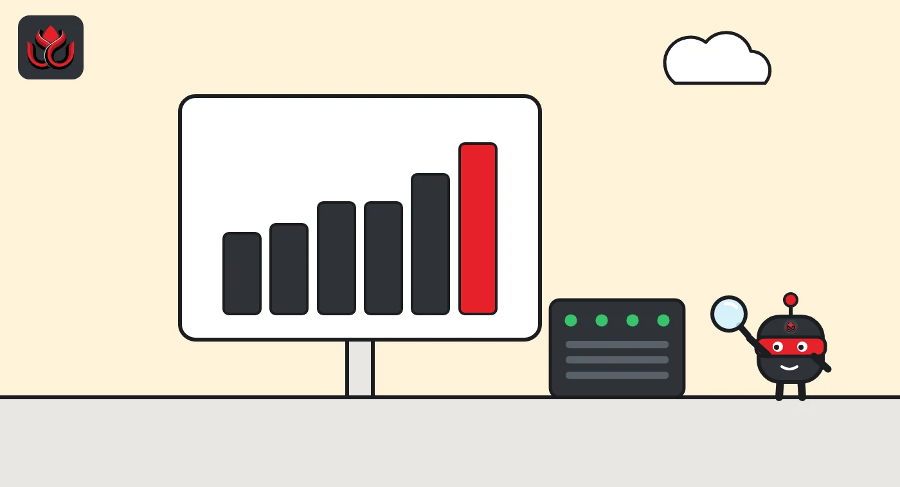
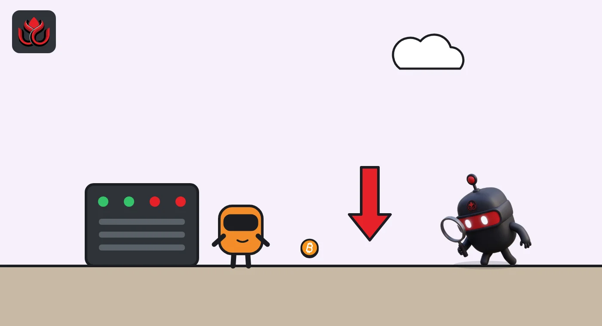

Bitcoin hashrate is back above 1 zettahash: two difficulty jumps in 13 days
Mining difficulty rose 5.92% on October 16 and another 5.54% on October 29, ending seven months below the 1 ZH/s line. A new record is about 5% away, but miners earn far less per machine than a year ago.
Key points
- Bitcoin difficulty rose 5.92% on October 16 and 5.54% on October 29, 2026, to 148.36T, about 5% below the record 155.97T.
- The seven-day hashrate hit 1,088 EH/s on October 26, the highest since December 2025, after summer Texas shutdowns and a weak price pushed it down.
- Miners earn less: hashprice is about $34 per PH/s per day, against $46 at the 2025 peak, and futures point lower into 2027.
What the miners did
Bitcoin's total mining power crossed one zettahash per second (1 ZH/s, or 1,000 exahashes per second) on October 11, 2026, on a seven-day average, for the first time since June 1. Hashrate is the number of guesses all miners make each second while racing to find the next block. The figures come from mining data service Hashrate Index.
The network's difficulty followed. Difficulty is a setting that adjusts every 2,016 blocks (about every two weeks) so that blocks keep arriving roughly every 10 minutes. When more machines join, it goes up. On October 16, at block 971,712, it rose 5.92% to 140.58T, block explorer mempool.space shows. That cleared 139.70T, the level Hashrate Index says matches 1 ZH/s, and ended 15 straight adjustments below that line going back to March 20.
On October 29, at block 973,728, difficulty rose again, by 5.54%, to 148.36T.
How far difficulty has climbed
Difficulty has climbed about 16.4% across four adjustments from 127.45T, the level set on September 5, mempool.space data shows. One of those four was flat (minus 0.03% on October 3). The seven-day hashrate reached 1,088 EH/s on October 26, the highest since December 29, 2025, and the network averaged about 1,062 EH/s over the period ending October 29, Hashrate Index said.
The all-time highs are still ahead. The record difficulty is 155.97T, set on October 29, 2025, and the seven-day hashrate peak is 1,156 EH/s, from October 18, 2025, according to Hashrate Index.
Bitcoin mining difficulty, fall 2026 vs. record
T (trillion)
Sources: mempool.space, Hashrate Index (record)

Why hashrate fell in the first place
Three forces pushed miners offline this year, Hashrate Index said. The first was price. Bitcoin peaked at $126,080 in October 2025, according to CoinGecko, and then fell for most of 2026, which squeezed mining profits.
The second was weather. A late-January cold snap cut the seven-day average from 1,051 to 833 EH/s within a week. Difficulty fell 11.16% on February 7 and bounced 14.73% on February 19 when machines came back.
The third was Texas. Miners there switch off during the grid's peak demand intervals, known as ERCOT's "4CP" periods, to avoid high transmission charges. The network fell to 853 EH/s in June, and the June 14 adjustment was minus 10.09%. Hashrate stayed below 900 EH/s several times between June and August.
More miners, less money per machine
More hashrate means more competition for the same rewards. Hashprice, the expected daily revenue per unit of mining power, was about $34 per petahash per second per day after the October 29 adjustment, Hashrate Index said. It was $46 at the 2025 hashrate peak and bottomed at $27.74 on June 6, 2026.
Bitcoin closed October 29 at $77,839, CoinGecko data shows. On November 2, it traded near $78,730, about 37.6% below its all-time high.
Seasons matter too. From 2022 to 2026, October adjustments averaged plus 4.25%, the strongest month of the year, while June to September averaged plus 0.75%, Hashrate Index found. October 2026 is running at about plus 3.8% per adjustment.

Why Texas matters less now
The 4CP season covers the four summer months when Texas grid demand peaks. Hashrate Index listed the 2026 peaks as 82.0 GW on June 18, 90.8 GW on July 22, 90.2 GW on August 24 and 86.2 GW on September 12, an average of 87.3 GW.
Once the last peak interval passes, Texas miners have less reason to switch off in the afternoon. That helps explain why hashrate tends to come back in the fall and why October is usually the strongest month for difficulty.
Winter brings its own risk. The January cold snap showed that extreme weather can push large amounts of hashrate offline within days, when miners power down to free up electricity for homes.
Timeline
Cold snap cuts seven-day hashrate from 1,051 to 833 EH/s
Start of 15 straight adjustments below the 1 ZH/s equivalent
Difficulty falls 10.09% during Texas curtailment season
Seven-day hashrate crosses 1,000 EH/s again
Difficulty rises 5.92% to 140.58T at block 971,712
Seven-day hashrate reaches 1,088 EH/s
Difficulty rises 5.54% to 148.36T
What the forward market expects
Hashrate forward contracts let miners lock in future revenue. Their prices imply about 1,056 EH/s in November, 1,059 EH/s in December, 1,070 EH/s in January 2027 and 1,100 EH/s in March 2027, Hashrate Index said. The curve implies an average hashprice of about $32.88 through March 2027, below today's level. The five-month contract trades about 6% below spot, down from 13% on October 15.
LC Insight analysis
This section is our reading of the facts above, not a statement of fact.
- We think the climb back above 1 ZH/s is about the calendar, not better economics. Texas curtailment season ended and the weather cooled, while hashprice at about $34 is still well below last year's $46.
- Older, less efficient machines are the ones in trouble. If the forward curve is right, revenue per machine keeps drifting lower into early 2027 while competition keeps rising.
- A new difficulty record is close. At about 5% below the high, one or two strong adjustments would do it. A price drop or a January-style cold snap could stop the run just as quickly.
What's next
- The next difficulty adjustment in mid-November
- Whether difficulty passes the 155.97T record
- Hashprice if Bitcoin's price moves sharply
- Winter weather events in Texas and North America
Disclaimer. This article is based on public information and the sources listed below as of the update time shown. It is for information only and is not investment, legal or tax advice. Figures may change as companies and authorities publish new data.